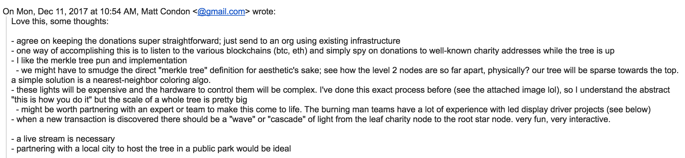
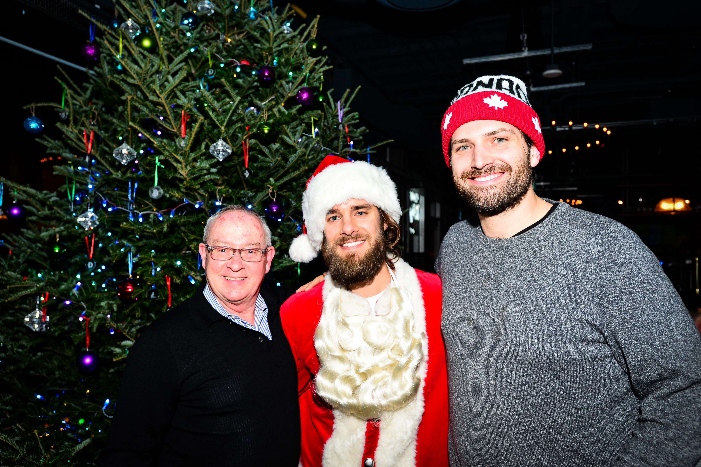
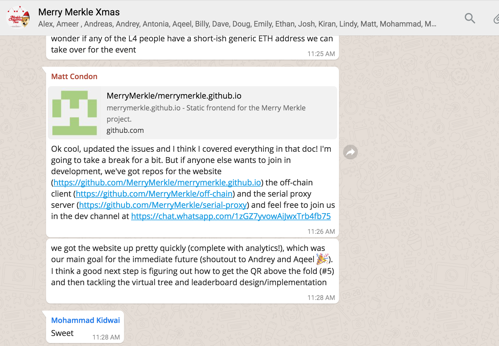
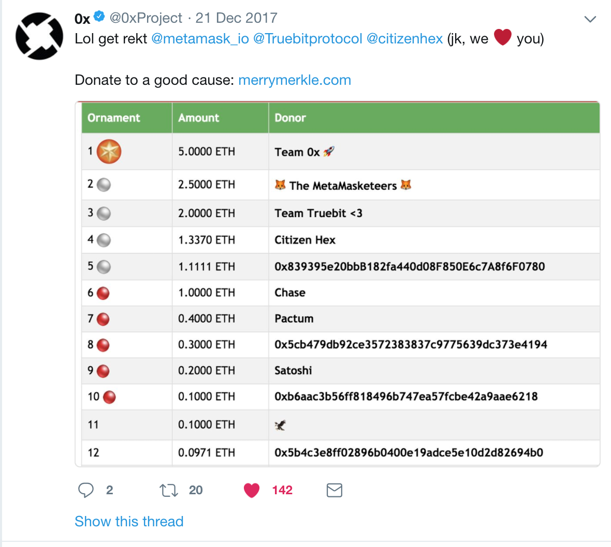

<!DOCTYPE html>
<html lang="en">
<head><meta name="generator" content="Hexo 3.9.0">
    <!-- hexo-inject:begin --><!-- hexo-inject:end --><!-- Document Settings -->
    <meta charset="utf-8">
    <meta http-equiv="X-UA-Compatible" content="IE=edge">

    <!-- Page Meta -->
    <title>Canada 2017</title>
    

    <!-- Mobile Meta -->
    <meta name="HandheldFriendly" content="True">
    <meta name="viewport" content="width=device-width, initial-scale=1.0">

    <!-- favicon -->
    <link rel="icon" type="image/png" href="/img/favicon.png">
    <link rel="manifest" href="/img/favicon/manifest.json">
    <meta name="msapplication-TileColor" content="#4360DF">
    <meta name="theme-color" content="#4360DF">

    <meta property="og:site_name" content="Merry Merkle">
    <meta property="og:type" content="website">
    <meta property="og:title" content="- Canada 2017">
    
    <meta property="og:url" content="https://andytudhope.github.io/background/canada.html">
    <meta property="og:image" content="https://andytudhope.github.io/img/shahada.png">
    <meta name="twitter:card" content="summary_large_image">
    <meta name="twitter:title" content="- Canada 2017">
    
    <meta name="twitter:url" content="https://andytudhope.github.io/background/canada.html">
    <meta property="twitter:image" content="https://andytudhope.github.io/img/shahada.png">
    <meta name="twitter:site" content="@cryptowanderer">
    <meta property="og:image:width" content="388">
    <meta property="og:image:height" content="400">

    <!-- Styles'n'Scripts -->
    <link rel="stylesheet" href="//cdnjs.cloudflare.com/ajax/libs/highlight.js/9.15.6/styles/monokai-sublime.min.css">
    <link rel="stylesheet" href="https://stackpath.bootstrapcdn.com/bootstrap/4.3.1/css/bootstrap.min.css" integrity="sha384-ggOyR0iXCbMQv3Xipma34MD+dH/1fQ784/j6cY/iJTQUOhcWr7x9JvoRxT2MZw1T" crossorigin="anonymous">
    <link href="https://fonts.googleapis.com/css?family=IBM+Plex+Mono:400,600|IBM+Plex+Sans:400,500,700" rel="stylesheet">
    <link href="https://fonts.googleapis.com/css?family=Euphoria+Script&display=swap" rel="stylesheet"> 
    <link rel="stylesheet" href="/merrymerkle-world/css/main.css">
    <script src="https://code.jquery.com/jquery-3.3.1.min.js" crossorigin="anonymous"></script><!-- hexo-inject:begin --><!-- hexo-inject:end -->
</head></html>
<body class="template-page">

    <!-- hexo-inject:begin --><!-- hexo-inject:end --><div class="main-container">
      <header>
    <div class="col">
        <a href="/merrymerkle-world/" class="logo"></a>
    </div>
    <nav>
        <ul>
            <li class="has-submenu">
                <a href="/merrymerkle-world/background/">Background<i class="arrow"></i></a>
                <div class="submenu">
                    <div class="container">
                        <div class="row">
                            <div class="col-md-5 text-right">
                                <h4>A History of Giving</h4>
                            </div>
                            <div class="col-md-4 offset-md-1">
                                <ul>
                                    <li><a href="/merrymerkle-world/background/canada.html" class="link-arrow">Canada</a></li>
                                    <li><a href="/merrymerkle-world/background/south-africa.html" class="link-arrow">South Africa</a></li>
                                    <li><a href="/merrymerkle-world/background/the-world.html" class="link-arrow">The World</a></li>
                                </ul>
                            </div>
                        </div>
                    </div>
                </div>
            </li>
            <li class=""><a href="/our-goal/">Our Goal</a></li>
        </ul>
    </nav>
    <div class="col btns text-right">
        <a href="/merrymerkle-world/" class="btn btn-purple btn-arrow">DONATE</a>
    </div>
    <a href="#" class="mobile-nav-trigger">
        <svg width="22" height="8" viewBox="0 0 22 8" fill="none" xmlns="http://www.w3.org/2000/svg"> <rect width="22" height="1" rx="0.5" fill="#090909"/> <rect y="7" width="22" height="1" rx="0.5" fill="#090909"/> </svg>
    </a>
    <div class="mobile-nav">
        <div class="mobile-nav-header">
            <a href="/merrymerkle-world/" class="logo"></a>
            <a href="#" class="mobile-nav-trigger-close">
                <svg width="18" height="17" viewBox="0 0 18 17" fill="none" xmlns="http://www.w3.org/2000/svg"> <rect x="1.5752" y="0.368273" width="22" height="1" rx="0.5" transform="rotate(45 1.5752 0.368273)" fill="#090909"/> <rect x="0.868164" y="15.9246" width="22" height="1" rx="0.5" transform="rotate(-45 0.868164 15.9246)" fill="#090909"/> </svg>
            </a>
        </div>
    </div>
    <div class="backdrop"></div>
</header>
      <!-- The main content area -->
<main id="main" role="main">

	<div class="stripe">
		<b>Merry Merkle</b>
	</div>

	<section class="single-docs-content">
		<div class="container-fluid">
			<div class="row">
				<div class="col-md-3 col-xl-2">
					<aside class="sidebar" role="navigation">
  <a href="#" class="btn sidebar-mobile-trigger">Cantos</a>
  <div class="sidebar-container">
    <div class="mobile-sidebar-header">
      <a href="/merrymerkle-world/" class="logo"></a>
      <a href="#" class="mobile-sidebar-trigger-close">
        <svg width="18" height="17" viewBox="0 0 18 17" fill="none" xmlns="http://www.w3.org/2000/svg"> <rect x="1.5752" y="0.368273" width="22" height="1" rx="0.5" transform="rotate(45 1.5752 0.368273)" fill="#090909"></rect> <rect x="0.868164" y="15.9246" width="22" height="1" rx="0.5" transform="rotate(-45 0.868164 15.9246)" fill="#090909"></rect> </svg>
      </a>
    </div>
    
      <ul class="sidebar-menu">
        
      <li class="active">
        <a href="/merrymerkle-world/background">Background</a>
        
        <ul class="sidebar-submenu">
          
      <li class="active">
        <a href="/merrymerkle-world/background/canada.html">Canada</a>
        
      </li>

      <li class="">
        <a href="/merrymerkle-world/background/south-africa.html">South Africa</a>
        
      </li>

      <li class="">
        <a href="/merrymerkle-world/background/the-world.html">The World</a>
        
      </li>
        </ul>
        
      </li>

      <li class="">
        <a href="/merrymerkle-world/our-goal/index.html">Our Goal</a>
        
      </li>
      </ul>
        
  </div>
  <div class="backdrop"></div>
</aside>
				</div>
				<div class="col-md-9 col-xl-8">
					<div class="row">
						<div class="col-md-12">
							<div class="editor-content">
								<h2 id="Canada-2017" class="article-heading"><a href="#Canada-2017" class="headerlink" title="Canada 2017"></a>Canada 2017<a class="article-anchor" href="#Canada-2017" aria-hidden="true"></a></h2><h1 id="How-the-Crypto-Community-Raised-200K-for-a-Homeless-Youth-Shelter-in-10-Days" class="article-heading"><a href="#How-the-Crypto-Community-Raised-200K-for-a-Homeless-Youth-Shelter-in-10-Days" class="headerlink" title="How the Crypto Community Raised $200K for a Homeless Youth Shelter in 10 Days"></a>How the Crypto Community Raised $200K for a Homeless Youth Shelter in 10 Days<a class="article-anchor" href="#How-the-Crypto-Community-Raised-200K-for-a-Homeless-Youth-Shelter-in-10-Days" aria-hidden="true"></a></h1><p>Over the 2017 holidays, we kicked off the MerryMerkle giving initiative, a broad mission to engage the crypto community to fund charitable causes. The results of the first event were astonishing with more than $200K raised to help support Covenant House, Canada’s largest agency serving at-risk, homeless and trafficked youth. The MerryMerkle brand will live on to fund other charity initiatives, with a potential relaunch at ETHDenver from Feb 16–18.</p>
<p></p>
<p>The below is the wild story of how the event unfolded. It’s also a playbook complete with tactics on how to select an initiative, set goals, assemble a team, promote an event, encourage friendly competition and establish credibility with some creative ideas. Community Management is a key role in the decentralized world, so we’re trying to kick off the discussion on how take your community engagement to the next level. Feel free to discuss other best practices in the comments or ping us with questions / ideas about future events! Also, a massive thank-you to all of those that participated!</p>
<p>On a side note, we also reached out to the <a href="http://pineapplefund.org/" target="_blank" rel="noopener">Pineapple Fund</a> (a charity that pledged $86 million in Bitcoin to a number of causes). We would love to talk with them about help with the MerryMerkle initiative going forward and are looking for an intro!</p>
<h3 id="December-11th-—-DAY-1" class="article-heading"><a href="#December-11th-—-DAY-1" class="headerlink" title="December 11th — DAY 1"></a>December 11th — DAY 1<a class="article-anchor" href="#December-11th-—-DAY-1" aria-hidden="true"></a></h3><p>At 5am on December 11th, I got a crazy email from Mohammad Kidwai (an open source contributor to Truebit). His idea: combine the Merkle Tree data structure, a christmas tree connected to Ethereum, and the surge in crypto prices into an epic holiday fundraiser!</p>
<p></p>
<p>My first thoughts were to share the email with the core Truebit team to drive some buy-in, and the results were good!</p>
<p></p>
<p>Would it be possible to put on a charity event this close to the holidays without a budget, banking setup, charity of choice, event location or a team? Pretty crazy idea right. First, we needed a charity to partner with, and we immediately thought of Covenant House.</p>
<p>Truebit has previously participated in the Covenant House Sleep Out event, where volunteers sleep on the streets during the winter in an effort to raise funds so that homeless youth don’t have to. Covenant House Toronto provides support to as many as 250 youth a day. More than a place to stay, Covenant House provides 24/7 crisis shelter and transitional housing on-site and in the community, along with comprehensive services including education, counselling, health care, employment assistance, job training and aftercare. Covenant House’s doors are open to youth 16 to 24 regardless of race, religion, sexual orientation, gender identity or the circumstances that have brought them to their doors.</p>
<p>Mohammad was a huge supporter of the Covenant House mission. He grew up not celebrating Christmas and instead would see people around the skatepark that were homeless, highlighting a different side of the holidays that was typically obscured by holiday cheer. So the mission really resonated and we had huge team buy-in.</p>
<p>Covenant house is innovative, open, and willing to move fast, so it was a perfect place to start! Before reaching out though, we needed a plan.</p>
<p>We started by getting the local crypto community involved to test our messaging and mission. As the heartbeat of the Toronto crypto community, the teams from <a href="https://l4.ventures" target="_blank" rel="noopener">L4</a> and <a href="https://blockgeeks.com" target="_blank" rel="noopener">Blockgeeks</a> were the first stop. The L4 team is responsible for the growth of two massive ETH developer meetups — one in Toronto, and one in Montreal that would make a perfect distribution list. Blockgeeks also runs regular developer meetups and training sessions in Toronto, wielding a massive email list for the crypto community With a few emails — their teams were behind the mission and willing to help.</p>
<p>When building a community, we’ve continued to see that the number one driver of success relates to a clear mission, and Mohammad’s initial idea here had sparked something special that immediately resonated with everybody we’d reached out to! We could tell by the excitement and quick responses that this initiative could be big.</p>
<h3 id="December-12th" class="article-heading"><a href="#December-12th" class="headerlink" title="December 12th"></a>December 12th<a class="article-anchor" href="#December-12th" aria-hidden="true"></a></h3><p>We reached out to some friends of Truebit who are also volunteers with Covenant House (Andreas Antoniou and Dave Armstrong). They were extremely interested and ready to get involved — I think it was an easier sell because they are also crypto investors. They recommended reaching out to Covenant House directly and put in a good word!</p>
<p></p>
<p>Covenant House was extremely fast to move and by that evening all parties were on a call talking logistics. We had also added support from Tracy Leparulo and Liam Horne from ETHWaterloo, another local powerhouse in the community that organizes the prestigious hackathon by the same name.</p>
<p>Andreas offered to donate his venue, the brand new Chef’s Assembly Hall, for a launch party on Thursday Dec 21. In a single meeting, we were able to confirm a date, venue and a distribution channel for our message. Another thing we’ve learned about community management…. always try to show momentum. People are easier to engage when there is a sense of both progress and urgency! Progress creates confidence and urgency creates excitement. Both are bonding tools for any early stage community.</p>
<p>In our case, assembling some of the best team members in the community in such a short time and choosing an <em>impossible</em> deadline helped to bond our small group of volunteers together.</p>
<h3 id="December-13–15" class="article-heading"><a href="#December-13–15" class="headerlink" title="December 13–15"></a>December 13–15<a class="article-anchor" href="#December-13–15" aria-hidden="true"></a></h3><p>We needed to get the Ether wallet and banking connections set up so we could start accepting donations. We also needed to confirm that any Ether raised could be converted to cash and transferred to the Covenant House bank account. There was a lot of help here and a large number of volunteers from the Truebit network that pitched in! A huge thanks to the people below:</p>
<ol>
<li>Josh Stark guided the Covenant house team through wallet setup using myetherwallet and also provided education on Private Key Management best practices</li>
<li>Dan Romero, the COO of Coinbase connected me with a few Canadian exchanges to get confirmation they could make the conversion without KYC (“know-your-customer”) information. For smaller charity events, it’s unlikely donors are willing to go through the KYC process, so getting confirmation was extremely important!</li>
<li>Jimmy Sheikh, a Lichtenstein lawyer took the time to explain potential options / risks and mechanics of Ether wallets, North American exchanges and transfers to the Covenant House Executive Team.</li>
<li>Tekin Salimi, a lawyer and Head of Community Relations at Polychain, took the time to get on a call with Coinsquare / Covenant House to discuss ETH to Cash conversion options</li>
<li>Matthew Whitcomb — Director of Coinsquare, the exchange we used to convert from ETH to cash and conduct the transfer to the Covenant House account.</li>
</ol>
<p>Complying with banking and legal regulations was stressful given there are no best practices to refer to within the not-for-profit sector. We’re very proud of how the entire team was able to work together to overcome obstacles so quickly. It was Mohammad’s mission that was able to drive volunteer support from the super high-powered individuals above. THANK YOU!</p>
<p>In parallel, it was also imperative to get an invite out to the local crypto community via the Ethereum Meetup Lists — Thursday the 21st is really close to the holidays and an ultra busy time for personal commitments. We were nervous that it would be tough to drive traffic to the event.</p>
<p>Meetup invites should be optimized and include direct “Call to Actions”. Every communication with your community is a chance to ask for help and engage your swarm of volunteers! Some of the tips below were helpful:</p>
<ol>
<li>Solid description of the Event, description of the cause (Covenant House) and a clear goal of $25,000 or one month of food for Covenant House Youth</li>
<li>Direct link to donation QR code via the merrymerkle website (never miss an opportunity to direct your audience to how they can help you)</li>
<li>Link to whatsapp / Telegram groups for interested volunteers to collaborate. Telegram is also good for much larger groups as Whatsapp maxes at 256</li>
<li>See the invite <a href="https://www.meetup.com/ethereumtoronto/events/245952116/" target="_blank" rel="noopener">here</a>.</li>
</ol>
<p>A shout out to Truebit’s lead Designer, Aqeel Mohammad, who — in a single day — created some branding assets for the event, a landing page and the meetup invite.</p>
<p></p>
<h3 id="December-16–18-—-Hack-Session-and-MVP’ing" class="article-heading"><a href="#December-16–18-—-Hack-Session-and-MVP’ing" class="headerlink" title="December 16–18 — Hack Session and MVP’ing"></a>December 16–18 — Hack Session and MVP’ing<a class="article-anchor" href="#December-16–18-—-Hack-Session-and-MVP’ing" aria-hidden="true"></a></h3><p>Venue planned, date set, invite out, website up with donation QR code — now it was time to build the tech!</p>
<ol>
<li>Virtual Tree + Leaderboard</li>
<li>Ethereum Connected Christmas Tree listening to Ethereum events</li>
</ol>
<p>Our Truebit community in Toronto had minimal hardware experience, but we were willing to go for it. Mohammad purchased supplies for a small scale prototype (LED lights, raspberry PI etc.) out of his personal funds and found a tutorial on how to rig them up. Then 10 of us descended on the University of Toronto over the weekend to try and figure it out. </p>
<p><strong>You can find the full <a href="http://www.instructables.com/id/Raspberry-Pi-Christmas-Tree-Light-Show" target="_blank" rel="noopener">demo here</a></strong>. </p>
<p>Big thanks to hardware legends Richard Moore and Yuet, Consensys developer Nick Dodson and University of Toronto Professor Andreas Veneris and his PHD students Neil and Zissis and Scott Moore for all dropping by.</p>
<p>While at the university, we put together a technical requirements doc and a proposed design for both the website and hardware. We started by getting the Pi to light up the LED’s but it soon became clear that it would be really hard to get this done in a few days (especially because everybody also had real jobs). So, we went into emergency mode going deep through the Truebit network on a hunt for experienced Makers.</p>
<p>We emailed hardware investors, mechanical engineers, burners and the team behind the Truebit #artproject. Luckily, we had connected with Sarah Friend a week before (a local maker and artist) and she graciously put out a request to the Site 3 Toronto Maker Community for help. The request caught the attention of <a href="https://lindywilkins.com" target="_blank" rel="noopener">Lindy Wilkins</a> (a maker, cyborg and educator ) and she was able to drop by the University that same day — which is actually insanely lucky — have you ever seen a job request filled in a single day?? Over the next few days, she brought together her team from <a href="https://bigredsky.tech" target="_blank" rel="noopener">Big Red Sky</a>, sourced a 12ft Tree, procured thousands of LEDs from rushed sources, built custom laser–cut ornaments and programmed a number of spectacular light shows to prepare for the demo at the live event.</p>
<p></p>
<p>It was incredible to watch even though there were some hiccups due to the tight timeline. For example, the materials ended up arriving on Wednesday morning leaving only about 36 hours to build the tree. When things don’t go to plan, it’s important to keep everybody collaborating and continue to adapt your decision making to new constraints. Sounds like simple advice, but most of the failures we see stem from frustration, disappointment and giving up. When you move fast, the environment is usually unstructured, so persistence is the most important trait a volunteer or employee can have for early stage projects. Always keep moving forward.</p>
<p>We also decided to send out the invitation before we had a “firm” plan — at Truebit, we are huge believers in using public accountability to spur action and we’ll often set tough deadlines for our team. So far, public accountability has been massively successful in bonding our team and community together. We find uncomfortable challenges create a requirement for the team to build trust! Anytime you can create a need for help in your community and get other members to fill that need, you further establish your culture.</p>
<p>While the hardware build was going on, we were also aiming to design a leaderboard on the website and connect the the tree to the Ethereum blockchain.</p>
<p><strong>Leaderboard Requirements:</strong></p>
<ol>
<li>Attached to a virtual tree — so that donations from the board would also appear on the ornaments on the tree</li>
<li>Connected to Ethereum, so that in real-time, donations would be read from Etherscan API, indexed and added to the leaderboard.</li>
<li>Transaction signing ability, so that using a web 3.0 provider, contributors could sign the transactions with a private key to claim “their” donations and appear on the leaderboard.</li>
<li>It’s extremely important to provide public gratitude in any community setting (Charity / Open Source, etc.) and a little friendly competition can go a long way. Consider contributor lists as a way for you to market the work of your volunteers. In the case of MerryMerkle — all donations were from anonymous numbered Ethereum accounts, so signing capabilities were KEY — I think donations would have been 75% less without this capability.</li>
</ol>
<p><strong>Physical Tree Requirements:</strong></p>
<ol>
<li>Arduino listens on the serial port for indication of what status the donations are in.</li>
<li>Node.JS server mediating between donation events and serial port.</li>
<li>Tree needed 3 “modes” based on number of donations and a series of “events” that are triggered based on amount of each individual donation.</li>
<li>Lights are ws2812b addressable LEDs, over 1,500 of them controlled individually</li>
<li>Tree also required laser cut ornaments</li>
<li><strong>Check out the code base for the above <a href="https://github.com/delightfuldelilah/ledCryptoTree/blob/master/ledCryptoTree.ino" target="_blank" rel="noopener">here</a></strong>.</li>
</ol>
<p>Truebit contributor Matt Condon came through here big time! He spent multiple days late into the evening implementing the above features. Truebit contributor Harley Swick implemented the virtual tree on the site and once again, Truebit’s designer Aqeel Mohammad provided all design assets! Another awesome open source contributor Andrey Petrov (from the Thousand Ether homepage), helped setup the landing page, domain registry and github repo.</p>
<p>It was awesome to see everything happen so quickly with no management layer and no set engineering processes. We used Github Issues and whatsapp to self manage in a completely remote and open source environment. Aqeel, Andrey and Mohammad were in Toronto, Matt was in Cape Town and Harley and I were in the middle of a Truebit hackathon in Nashville (we were all putting this together in whatever spare time we could find which led to a few all nighters in a row)!</p>
<p></p>
<h3 id="December-18–21" class="article-heading"><a href="#December-18–21" class="headerlink" title="December 18–21"></a>December 18–21<a class="article-anchor" href="#December-18–21" aria-hidden="true"></a></h3><p>The Truebit team was in Nashville for a Hackathon working on the Truebit smart contracts and we were a bit stressed out managing both processes. Only 40 people had responded from the invite list. Was it too close to Xmas? What if nobody showed up — — what if we didn’t raise any money? Personally, I was a little nervous aiming to do something publicly with so many stakeholders and such little planning. At Truebit, we believe that you need to put yourself on the line to make things happen — this is a core value we promote in the Truebit community. Try and encourage your community to take big risks and celebrate bold failures. It will lead to better results in the long run.</p>
<p>Over the days leading up to the event, the Big Red Sky Team continued on the hardware while the Truebit team finished the website. We found using multiple open Whatsapp channels worked best here to coordinate and also blasted these links out to the Toronto Blockchain Devs community run by Antoine Devuyst to recruit additional help. Whatsapp worked really well — we were even able to attract a few ICO scammers — the ultimate sign of community success!</p>
<p>While the technical development continued, Ameer Rosic from Blockgeeks started to turn on the marketing taps! We blasted the invite across the Blockgeeks, L4 and Truebit Facebook, Twitter, LinkedIN, email newsletters and Reddit, all coordinated through our chat platforms. Each team linked relevant posts in the whatsapp / telegram channels and encouraged the volunteer communities to upvote, like, retweet, etc. Content distribution is another massive value add an engaged community can provide. Taking the time to specifically speak with each person in your community and individually ask for help here can drive tremendous amplification when it’s time to share your content!</p>
<p>One of the Truebit unsung hero’s is community manager Aaron Foster (also from Bitpoint Network). He’s been diving deep finding LinkedIN + Facebook crypto groups over the past few months and was instrumental in sharing news related to MerryMerkle across these groups. Using his network of community managers, the whatsapp group, social channels and Ameer’s help, we were able to get a post related to MerryMerkle upvoted to the top of r/ethereum subreddit for more than 24 hours.</p>
<p>The early stage social media announcements paid off — we received a ton of goodwill, retweets and well wishes on reddit and 3.5 ETH in early donations (back when ETH was worth around $800). By the time the event started, the community had already pitched in $8.3K (or 30% of our goal)!</p>
<p>Covenant House received inquiries from the public as to whether the event was legitimate, and by posting about the event on social media, they were able to help establish the fundraiser’s credibility.</p>
<h3 id="Thursday-December-21-—-The-Event" class="article-heading"><a href="#Thursday-December-21-—-The-Event" class="headerlink" title="Thursday, December 21 — The Event"></a>Thursday, December 21 — The Event<a class="article-anchor" href="#Thursday-December-21-—-The-Event" aria-hidden="true"></a></h3><p>The event space was absolutely awesome. The Truebit team flew back from the Nashville hackathon just in time to help setup! Some of the tactics that worked really well:</p>
<ol>
<li>Projector showing — Walls.io which gathers all the tweets for a specific hashtag. Show’s everybody at the event what others around them are thinking and also what’s going on in the global community outside of the event — this is how the donations and tweets from global crypto companies encouraged local participation</li>
<li>The leaderboard with new donations added in real time (see images below)</li>
<li>Live speeches from the Covenant House Executive Director, event volunteers and venue host</li>
<li>Ability to accept credit card live at the venue for those that didn’t own any Ether</li>
<li>A photo booth with fun props to encourage social media sharing (Thanks to @Tracy Leparulo for your awesome work decorating)</li>
<li>A BLOCKCHAIN CONNECTED XMAS TREE!!</li>
</ol>
<p></p>
<p>The lights would dance and change colours based on the amounts donated and milestones hit.</p>
<p>For community building, in addition to a solid mission, the next best tool in your arsenal is the power of personal email! The more people you know, the more people you can help or alternatively, ask for help. Becoming intertwined in the crypto community was a personal mission for Truebit in 2017. To make that happen, Truebit conducted interviews with 30+ community managers across projects to try and learn more about best practices. Spending an hour listening to others share their frustrations, motivations, best practices and tactics can be very powerful emotionally and also builds quick rapport. Through the connection’s we built last year, we reached out to our friends at each project to ask for help with a few things:</p>
<ol>
<li>Help with donations — this was where the leaderboard was key! lt provided a cool way to compete for a good cause, helped demonstrate the power of the crypto community and also provided a great branding opportunity for projects</li>
<li>Help distributing the message — our community of friends helped retweet and get the message distributed globally</li>
</ol>
<p>It was fun to watch the personal emails catch fire — donations started to roll-in and they sparked unexpected twitter battles which were really cool to watch and lead to even more sharing.</p>
<p></p>
<p></p>
<p>Everytime a donation came in it lit up the tree, the leaderboard would change and a light show was triggered leading to massive cheers and even more donations.</p>
<p></p>
<p>In total there were 111 donations overall and then a few credit card donations also! What’s great about using Ethereum for charity — everything is completely transparent via <a href="https://etherscan.io/txs?a=0x78f47f9e7088f8b55145248c8d3efd9451acec47" target="_blank" rel="noopener">Etherscan</a>.</p>
<p>We also effectively employed another tactic, focusing on extreme gratitude to contributors and direct thanks to individuals at the event. Putting people on the spot to celebrate them and their kind deed was a very powerful tool. Major thanks to Quantstamp and Polymath for donating live at the event! All of the preparation came together perfectly and it was super rewarding to watch the donations climb to $30K…. $40K…. $50K and finally $77K. More than three times the targeted goal. Seeing the extreme appreciation and gratitude from Covenant House was extremely rewarding and demonstrating the passion and goodwill of the crypto community live had me close to tears.</p>
<p></p>
<h3 id="Post-Event" class="article-heading"><a href="#Post-Event" class="headerlink" title="Post Event"></a>Post Event<a class="article-anchor" href="#Post-Event" aria-hidden="true"></a></h3><p>The event is only half the battle — afterwards you can actually drive even more engagement. To do this we filmed and edited a video with some fantastic footage from Covenant House and many of the event organizers. Check it out!</p>
<p>I use an awesome service called <a href="https://filmyeti.com" target="_blank" rel="noopener">FilmYeti</a> that helps place you with vetted professionals for all types of video services. They were able to introduce me to Eric Miller who also helped with the ETHWaterloo video. He does a phenomenal job. The video helps to tell a more emotional story that we used as social proof to help drive more media.</p>
<p>We partnered with Addison Huegel who does PR for Truebit, Zilliqa, Kyber and previously for the Ethereum Foundation to get local media coverage and he was extremely successful landing an interview and story on CBC CBC Article. Armed with social proof via PR coverage, $70K in donated funds and an awesome video further explaining the mission it was time to go back to personal email.</p>
<p>As I said earlier, building community requires building momentum. People love to get involved with initiatives that can drive an emotional response but they also need to see progress. When designing your marketing initiatives and charity campaigns always think about how you can continue to move things forward in communications with your community — take the time in advance to craft a story.</p>
<p>Over the next few days, we personally emailed a large number of contacts with the event information and asked for more help! The results were astounding. The donations increased from $77K to $100K… $110K… $125K and then a few special things happened:</p>
<ol>
<li>Our seed investor Polychain Capital showed their support for Truebit in a massive way by making the largest donation. The culture Polychain promotes is why they are really really special as an investor. It feels like we’re part of a family.</li>
<li>My friend, the COO of Consensys Andrew Keys and their division Token Foundry came in with a huge 10ETH donation</li>
<li>Fred Wilson of USV took the time to promote the event on his blog USV Blog</li>
</ol>
<p>Due to an increase in ETH prices and the donations above, the total ballooned and we were able to close on a final tally of <strong>$201K dollars</strong> which was converted to cash by Coinsquare and transferred to the Covenant House account. This astounding contribution will make a huge difference in the lives of vulnerable youth by providing nearly nine months of food and shelter for approximately 100 youth a day. This was also 8x on the initial goal — which we were afraid we’d miss.</p>
<p>See the final leaderboard at <a href="https://merrymerkle.com/" target="_blank" rel="noopener">https://merrymerkle.com/</a></p>
<p>The event was really special because 100% of the funds were actually given to Covenant House. The event was run completely by volunteers from the Truebit and Toronto crypto community and then amplified by the global crypto community. We all demonstrated the power that decentralized remote communities and technology can bring. There were a few small expenses for the tree, the hardware and the video covered by the Toronto community upfront, but everything else was donated (everybody’s time, the website, the design, the venue, all marketing was done via meetup and social channels). It’s very rare to see people come together with speed and efficiency during a busy time to support a cause and I’m just super grateful for the support and to be a part of it.</p>
<p>This whole event is really what the crypto community is all about. We are seeing a number of amazing initiatives — like the one from Brian Armstrong at Coinbase, the Pineapple Fund, CryptoPledge and TITHE. We’re looking for advice on how we can tie these initiatives together to look at scaling up the social impact of cryptocurrency!</p>
<p>If you’re interested in this idea, or have suggestions on what the next steps for MerryMerkle should be, please add your email address to this google form to receive further updates. Thank you!</p>
<p>Extra special thanks to all contributors, projects and volunteers:</p>
<p>ConsenSys, 0x, Status, Polychain, Zeppelin Solutions, MetaMask, Protocol Labs, Augur, Richard Ma + Quantstamp, Bounty0x, Blockgeeks, L4 Ventures, Citizen Hex, Aid Coin, Matchpool, ælf, Cryptiv, cyber • Fund, Polymath, Fred Wilson, Griff Green.</p>
<p>Aqeel I Mohammad — Design, Matt Condon — Development, Mohammad Kidwai — Idea and Development, Andrey Petrov — Development, Josh Stark — Operations, Ameer Rosic — Marketing, Tracy Leparulo — Logistics, Liam Horne — marketing, the Whole Team from Covenant House (Tracie Leblanc, Josie DeRogo, Antonia Jennings, Bruce and Stacy Carcao), Andreas Antoniou — Venue Donation, Lindy Wilkins and the Team from Big Red Sky for building the Tree ( Alanna Predko (creative director), Jane Hacker (hardware) Shaughn Tron, Dani Jones, and Leandro K.</p>

							</div>
							<div class="docs-footer">
							</div>
						</div>
					</div>
				</div>
				<div class="col-lg-12 col-xl-2 d-none d-xl-block">
					<div class="right-sub-navigation">
						<ul></ul>
					</div>
				</div>
			</div>
		</div>
	</section>

</main>
      <footer>
    <div class="get-started">
        <div class="container">
            <div class="row">
                <div class="col-lg-5">
                    <h3>Global Giving</h3>
                </div>
                <div class="col-lg-7 text-right">
                    <div class="inline">
                        <a href="/merrymerkle-world/background/" class="btn btn-white-fill btn-arrow">Learn More</a>
                    </div>
                </div>
            </div>
        </div>
    </div>
    <div class="connect">
        <div class="container">
            <div class="row">
                <div class="col-md-12">
                    <h5>Connect</h5>
                    <ul>
                        <li>
                            <a href="https://twitter.com/MerkleMerry" target="_blank">
                                <svg width="26" height="26" viewBox="0 0 26 26" fill="none" xmlns="http://www.w3.org/2000/svg">
                                    <g opacity="0.5">
                                    <rect width="26" height="26" rx="2" fill="white"/>
                                    <path fill-rule="evenodd" clip-rule="evenodd" d="M19.232 9.056C19.8854 8.63145 20.3656 7.9874 20.586 7.24C19.987 7.62 19.325 7.89 18.631 8.036C18.0671 7.38246 17.2482 7.00471 16.385 7C14.685 7 13.307 8.469 13.307 10.282C13.307 10.533 13.334 10.784 13.388 11.029C10.83 10.893 8.562 9.587 7.044 7.601C6.76882 8.10728 6.62574 8.67477 6.628 9.251C6.628 10.389 7.17 11.394 7.996 11.982C7.50422 11.9649 7.02473 11.8239 6.602 11.572V11.613C6.602 13.203 7.664 14.53 9.072 14.831C8.62003 14.9617 8.14316 14.9813 7.682 14.888C8.073 16.192 9.21 17.14 10.557 17.167C9.2938 18.2353 7.64202 18.7279 6 18.526C7.38681 19.4836 9.03169 19.9976 10.717 20C16.377 20 19.473 15 19.473 10.662C19.473 10.52 19.47 10.378 19.464 10.238C20.0725 9.76702 20.5926 9.19176 21 8.539C20.4416 8.80337 19.8449 8.97785 19.232 9.056Z" fill="black"/>
                                    </g>
                                </svg>
                            </a>
                        </li>
                        <li>
                            <a href="https://github.com/andytudhope/merrymerkle-world/" target="_blank">
                                <svg width="26" height="26" viewBox="0 0 26 26" fill="none" xmlns="http://www.w3.org/2000/svg">
                                    <g opacity="0.5">
                                    <rect width="26" height="26" rx="2" fill="white"/>
                                    <path fill-rule="evenodd" clip-rule="evenodd" d="M5 13.334C4.99977 16.9216 7.29547 20.1067 10.699 21.241C11.116 21.317 11.268 21.06 11.268 20.839C11.268 20.641 11.261 20.117 11.257 19.422C8.939 19.925 8.45 18.305 8.45 18.305C8.07 17.342 7.524 17.085 7.524 17.085C6.767 16.569 7.581 16.579 7.581 16.579C8.418 16.638 8.858 17.438 8.858 17.438C9.601 18.711 10.808 18.343 11.283 18.13C11.359 17.592 11.574 17.225 11.813 17.016C9.962 16.806 8.016 16.091 8.016 12.898C8.016 11.988 8.341 11.244 8.874 10.662C8.788 10.451 8.502 9.60299 8.956 8.45599C8.956 8.45599 9.656 8.23199 11.247 9.31099C11.9272 9.12556 12.629 9.03107 13.334 9.02999C14.0386 9.03093 14.7401 9.12508 15.42 9.30999C17.01 8.23199 17.71 8.45599 17.71 8.45599C18.164 9.60299 17.878 10.451 17.792 10.662C18.327 11.244 18.649 11.988 18.649 12.898C18.649 16.099 16.7 16.804 14.844 17.01C15.143 17.267 15.41 17.776 15.41 18.553C15.41 19.667 15.4 20.566 15.4 20.839C15.4 21.062 15.55 21.321 15.972 21.24C20.0101 19.8925 22.3836 15.7182 21.4767 11.559C20.5697 7.39967 16.6739 4.59249 12.4413 5.04846C8.20881 5.50443 5.00027 9.07696 5 13.334H5Z" fill="black"/>
                                    </g>
                                </svg>
                            </a>
                        </li>
                    </ul>
                </div>
            </div>
        </div>
    </div>
</footer>
  
    </div>

    <!-- 3rd party scripts -->
    <script src="//cdn.jsdelivr.net/bluebird/3.5.0/bluebird.min.js"></script>
    <script src="https://cdnjs.cloudflare.com/ajax/libs/fetch/2.0.3/fetch.js"></script>
    <script src="https://cdnjs.cloudflare.com/ajax/libs/popper.js/1.14.7/umd/popper.min.js" integrity="sha384-UO2eT0CpHqdSJQ6hJty5KVphtPhzWj9WO1clHTMGa3JDZwrnQq4sF86dIHNDz0W1" crossorigin="anonymous"></script>
    <script src="https://stackpath.bootstrapcdn.com/bootstrap/4.3.1/js/bootstrap.min.js" integrity="sha384-JjSmVgyd0p3pXB1rRibZUAYoIIy6OrQ6VrjIEaFf/nJGzIxFDsf4x0xIM+B07jRM" crossorigin="anonymous"></script>
    <script src="//cdn.jsdelivr.net/gh/highlightjs/cdn-release@9.15.6/build/highlight.min.js"></script>
    <script src="https://cdn.jsdelivr.net/npm/js-cookie@2/src/js.cookie.min.js"></script>
    <script src="https://cdnjs.cloudflare.com/ajax/libs/sticky-kit/1.1.3/sticky-kit.min.js"></script>
    <script type="text/javascript" src="/merrymerkle-world/js/main.js"></script><!-- hexo-inject:begin --><!-- hexo-inject:end -->

</body>
</html>
